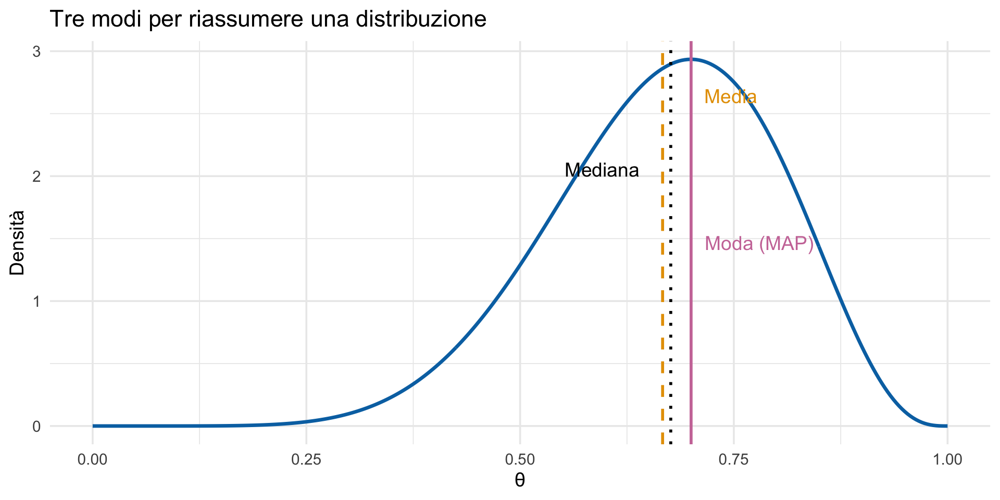
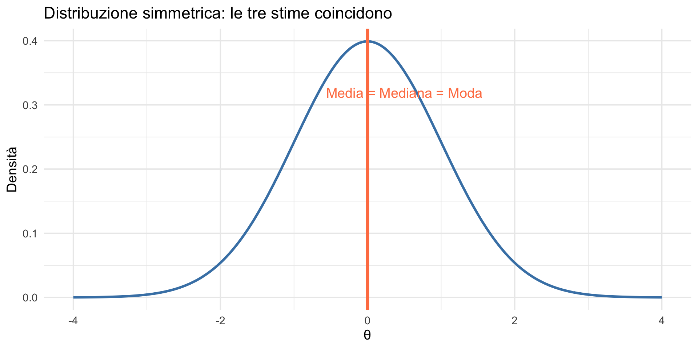
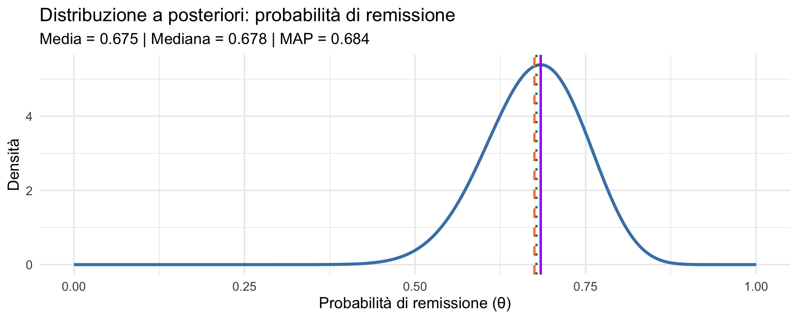
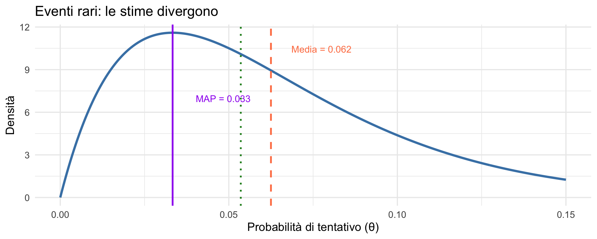
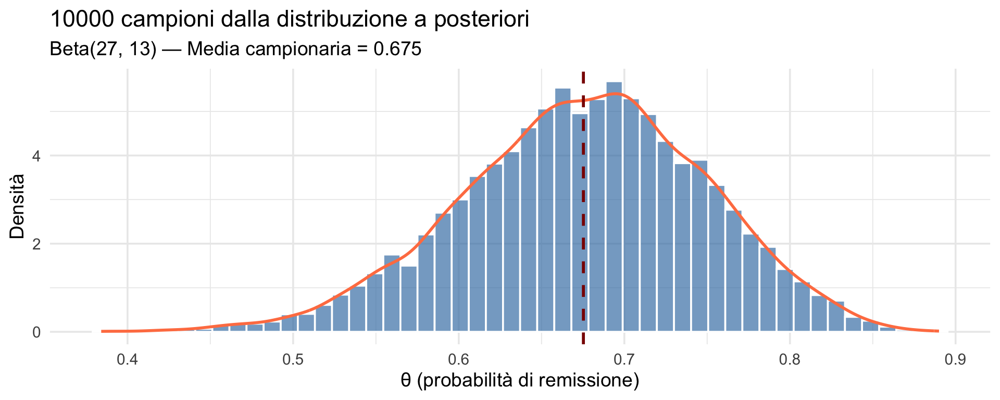

Sintesi della distribuzione a posteriori
Stime puntuali — Segmento 1
![]()
29 ottobre 2026
Dalla distribuzione ai numeri
Cosa sappiamo fare
Nelle ultime tre lezioni abbiamo costruito un percorso completo:
Lezione 17: i tre ingredienti bayesiani — prior, verosimiglianza, posterior. Come calcolare il posterior con l’approssimazione a griglia.
Lezione 18: l’apprendimento sequenziale — il posterior di oggi diventa il prior di domani.
Lezione 19: le famiglie coniugate — Beta-Binomiale e Normale-Normale — come scorciatoie analitiche per l’aggiornamento.
Sappiamo quindi calcolare la distribuzione a posteriori. Ma a questo punto sorge un problema pratico: come la comunichiamo?
Il problema della comunicazione
La distribuzione a posteriori contiene tutta l’informazione sul parametro. Ma una distribuzione è un oggetto complesso: una curva con infinite sfumature, ricca di significato ma difficile da comunicare nella sua interezza.
Quando un clinico chiede “Funziona o no?”, quando un comitato etico pretende un numero, quando un articolo richiede un risultato sintetico — dobbiamo saper sintetizzare la distribuzione, estraendo l’essenziale senza tradirne la ricchezza.
Il problema della comunicazione
Oggi esploriamo tre modi per estrarre un singolo valore dalla distribuzione a posteriori: media, mediana e moda (MAP). Nel prossimo segmento vedremo come comunicare anche l’incertezza attraverso gli intervalli di credibilità.
Obiettivi
- Capire perché sintetizzare la distribuzione a posteriori.
- Imparare a calcolare stime puntuali: media, mediana, moda (MAP).
- Comprendere quando usare ciascuna stima.
- Applicare questi concetti a esempi psicologici concreti.
Parte 1: dalla distribuzione ai numeri
Il paradosso della ricchezza informativa
La distribuzione a posteriori contiene tutte le informazioni sui valori plausibili del parametro.
Ma questa ricchezza può essere un problema:
- Come comunichiamo i risultati ai colleghi?
- Come prendiamo decisioni cliniche?
- Come confrontiamo studi diversi?
Un esempio motivante
Immaginiamo di avere stimato la probabilità che un trattamento per l’ansia sia efficace.
La distribuzione a posteriori ci dice:
- “il 95% della massa di probabilità è tra 0.45 e 0.85”;
- “la probabilità più credibile è circa 0.67”.
Ma il responsabile del servizio — o il committente della ricerca — ci chiede: “Funziona o no?”
Dobbiamo imparare a sintetizzare senza perdere informazioni essenziali.
Le domande fondamentali
Quando sintetizziamo una distribuzione a posteriori, cerchiamo di rispondere alle seguenti domande:
- Qual è il valore più credibile del parametro?
- Quanto siamo incerti su questo valore?
- Quale intervallo contiene i valori plausibili?
Oggi affronteremo la prima domanda.
Parte 2: le tre stime puntuali
Media, mediana e moda

La media a posteriori
La media è il valore atteso del parametro:
\[ \mathbb{E}[\theta \mid \text{dati}] = \int \theta \cdot p(\theta \mid \text{dati}) \, d\theta . \]
Interpretazione: se dovessimo scommettere su un valore, la media minimizza l’errore quadratico medio.
Quando usarla: distribuzioni simmetriche o leggermente asimmetriche.
La mediana a posteriori
La mediana divide la distribuzione in due parti uguali:
\[ P(\theta < \text{mediana}) = P(\theta > \text{mediana}) = 0.5 . \]
Interpretazione: il valore tale che è ugualmente probabile che il parametro sia sopra o sotto.
Quando usarla: distribuzioni asimmetriche, perché è robusta agli estremi.
La moda a posteriori (MAP)
La moda è il valore con la massima densità a posteriori:
\[ \text{MAP} = \arg\max_\theta \, p(\theta \mid \text{dati}) . \]
Interpretazione: il singolo valore più credibile del parametro.
Quando usarla: quando serve “il miglior singolo valore”, ma attenzione alle distribuzioni multimodali.
Un parallelo con il frequentismo
Nel framework frequentista, la stima puntuale per eccellenza è lo stimatore di massima verosimiglianza (MLE): il valore del parametro che massimizza la verosimiglianza. È un’operazione solo sui dati, senza prior.
La moda a posteriori (MAP) è l’analogo bayesiano: massimizza non la verosimiglianza, ma il posterior (verosimiglianza \(\times\) prior). Con un prior uniforme, MAP e MLE coincidono. Con un prior informativo, la MAP incorpora la conoscenza pregressa.
La media a posteriori, invece, non ha un analogo frequentista diretto — è un’operazione tipicamente bayesiana che “pesa” tutti i valori possibili del parametro.
Quando le tre stime coincidono?

Se la distribuzione a posteriori è simmetrica e unimodale, media, mediana e moda sono identiche.
Questo succede tipicamente con la famiglia coniugata Normale-Normale che abbiamo visto nella Lezione 19.
Parte 3: un esempio clinico
Scenario: efficacia di un intervento CBT
Uno psicologo clinico vuole stimare la probabilità di remissione dopo un ciclo di terapia cognitivo-comportamentale (CBT) per il disturbo d’ansia generalizzato.
Dati disponibili:
- 30 pazienti hanno completato il trattamento;
- 21 hanno mostrato remissione dei sintomi.
Prior: dalla letteratura, ci si aspetta circa il 60-70% di successo. Usiamo una Beta(6, 4), centrata su 0.6.
Impostiamo il modello
L’aggiornamento bayesiano
La credenza a priori:
La credenza a posteriori:
Calcoliamo le tre stime
Media a posteriori: 0.675 Moda a posteriori (MAP): 0.684 Mediana a posteriori: 0.678 Le tre stime sono molto simili

Con una distribuzione quasi simmetrica, le tre stime differiscono di meno dell’1%.
Interpretazione clinica
Possiamo ora rispondere al responsabile del servizio:
“la nostra migliore stima è che circa il 68% dei pazienti mostrerà remissione dopo il trattamento CBT.”
Ma questa è solo una stima puntuale. Per comunicare anche l’incertezza, dobbiamo usare gli intervalli di credibilità (prossimo segmento).
Parte 4: quando le stime divergono
Il caso delle distribuzioni asimmetriche
Consideriamo uno scenario diverso: stimiamo la frequenza di eventi rari — ad esempio, la probabilità che un paziente con ideazione suicidaria passi all’atto entro un anno.
Dati: su 30 pazienti monitorati, 1 ha tentato il suicidio.
Le stime divergono di più
Media a posteriori: 0.0625 Moda a posteriori (MAP): 0.0333 Mediana a posteriori: 0.0536 Visualizziamo la differenza

Con distribuzioni asimmetriche, la scelta della stima puntuale conta di più.
Quale stima scegliere?
| Situazione | Stima consigliata |
|---|---|
| Distribuzione simmetrica | Qualsiasi (sono equivalenti) |
| Distribuzione asimmetrica | Mediana (robusta) |
| Serve “il valore più probabile” | MAP |
| Serve minimizzare l’errore medio | Media |
| Incertezza sugli estremi | Mediana |
Il messaggio fondamentale
Una stima puntuale non sostituisce la distribuzione completa.
La distribuzione a posteriori ci dice non solo qual è il valore più credibile, ma anche quanto siamo incerti su quel valore.
La stima puntuale è un riassunto, non la risposta completa.
Parte 5: lavorare con i campioni
Dal calcolo analitico ai campioni
Finora abbiamo usato formule esatte (possibili con le distribuzioni coniugate della Lezione 19).
Ma in pratica, con modelli più complessi, spesso lavoriamo con campioni estratti dalla distribuzione a posteriori (metodi MCMC, che vedremo nelle prossime lezioni).
Come calcoliamo le stime puntuali dai campioni?
Estrarre campioni dalla posteriori
Usiamo l’esempio CBT — Beta(27, 13):
[1] 0.7210990 0.6436452 0.6188141 0.6399565 0.6838415 0.5233331 0.6828917
[8] 0.4549350 0.6802387 0.5482326Ogni valore è un possibile valore del parametro, estratto con probabilità proporzionale alla sua densità a posteriori.
Calcoliamo le stime dai campioni
# Media: semplicemente la media dei campioni
media_campioni <- mean(campioni)
# Mediana: il valore centrale
mediana_campioni <- median(campioni)
# Moda: richiede stimare la densità
densita <- density(campioni)
moda_campioni <- densita$x[which.max(densita$y)]
cat("Media (da campioni):", round(media_campioni, 3), "\n")Media (da campioni): 0.675 Mediana (da campioni): 0.678 Moda (da campioni): 0.694 Confrontiamo con i valori esatti
Statistica Valore_esatto Valore_campioni
1 Media 0.6750 0.6753
2 Mediana 0.6779 0.6783
3 Moda 0.6842 0.6944Con 10000 campioni, le stime sono molto accurate. Questo è il motivo per cui i metodi MCMC sono così potenti: non serve conoscere la formula esatta del posterior, basta saperlo campionare.
Visualizziamo i campioni

Parte 6: la variabilità a posteriori
Non solo il centro, ma anche la dispersione
Oltre alla tendenza centrale, è importante quantificare quanto è dispersa la distribuzione a posteriori. La deviazione standard a posteriori ci dice quanto siamo incerti.
SD a posteriori (formula): 0.0731 SD a posteriori (campioni): 0.0738 Interpretazione della deviazione standard
Con una media di 0.68 e una SD di 0.07:
- il 68% della massa a posteriori è circa tra 0.6 e 0.75;
- il 95% della massa a posteriori è circa tra 0.53 e 0.82.
Queste sono approssimazioni basate sulla regola della Normale; nel prossimo segmento vedremo come calcolare intervalli di credibilità esatti.
Riepilogo del segmento
Tre stime puntuali: media, mediana e moda (MAP).
Coincidono per distribuzioni simmetriche, ma divergono per distribuzioni asimmetriche.
La media minimizza l’errore quadratico; la mediana è robusta agli estremi; la moda (MAP) è il valore più credibile.
La MAP è l’analogo bayesiano del MLE frequentista, ma incorpora il prior.
Con i campioni MCMC, le stime si calcolano facilmente con
mean(),median()edensity().
Cosa vedremo nel prossimo segmento
Segmento 2: intervalli di credibilità
- Intervallo a code uguali (ETI).
- Intervallo a densità più alta (HDI).
- Il confronto con l’intervallo di confidenza frequentista.
- Applicazioni cliniche e di ricerca.